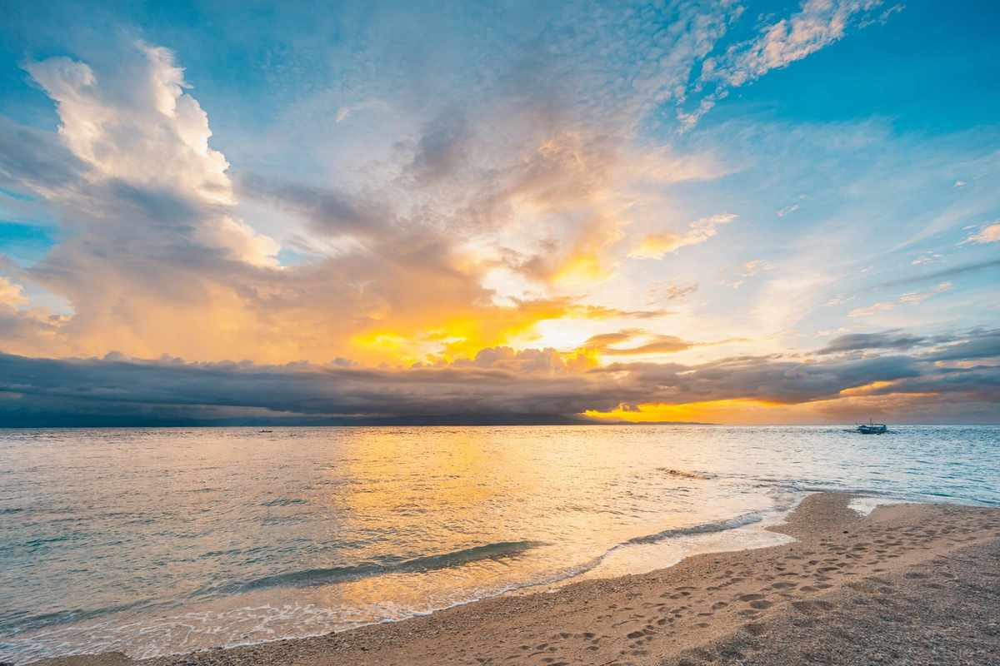

Siquijor has about 70 kilometres of ring road and six towns on it, so nothing is far from anything else. That makes the choice of base sound unimportant, and it is not. Whether you sleep in San Juan, Lazi or Maria decides how many evenings end with a dark ride home, whether dinner is a walk or an expedition, and whether your swim happens before the tour groups arrive or after them.
The short answer for a first visit is San Juan, on the southwest coast. Rooms, cafés, dive shops, scooter rentals and the sunset beaches share one stretch of road, so there is less to organise. If you already know you want quiet, look at Lazi for waterfalls and heritage or Maria for cliffs and empty sand. If your boat lands late or leaves early, a night near the port can save the whole trip.
Almost everyone arrives by boat (the Dumaguete to Siquijor first-timer guide covers the crossing), and the island runs on cash, scooters and the odd power cut. This guide deals with those too, along with what rooms cost and how to split a stay between two bases.

The Short Answer: Pick Your Base by Pace
The easy, social base
- Cafés, restaurants, bars and dive shops on one strip
- Paliton, Tubod, Solangon and Maite beaches
- The widest range of rooms and prices
The quiet bases
- Lazi: church, balete tree and Cambugahay Falls close together
- Maria: cliff jumps and near-empty beaches
- Few restaurants, and a scooter is close to essential
San Juan: The Easy First Base
San Juan packs most of what visitors come for into one coastal road. You can leave your room, find coffee, swim, rent a scooter and sort out dinner without arranging anything in advance. The price of that convenience is crowds: it is the busiest and most expensive stay zone, and the famous beaches are not empty at midday. Treat San Juan as the base for evenings and logistics, then ride out early for the quieter spots.
Where you sleep inside San Juan matters more than newcomers expect. Paliton charges about ₱20 to enter and Tubod roughly ₱50 to ₱100, so confirm at the gate.
- Tubod and SolangonClosest to the Tubod Marine Sanctuary, so snorkelling starts a short walk from your room. Many resorts and hostels sit here.
- PalitonNearest to the island's best-known sunset beach. Quieter after dark and more dependent on a scooter.
- MaiteCalmer water and a gentler pace, which is why families tend to land here.
- The hills above townInfinity pools, views and silence, in exchange for a steep ride home. Ask whether a tricycle can reach the gate and whether there is a generator.
Lazi: Waterfalls, a Big Church and Early Mornings
Lazi suits travellers who would rather wake up near the sights than ride to them. The old convent and church, the balete tree with its spring and Cambugahay Falls are all within about ten minutes of each other. Sleeping nearby means you can reach the falls early, and the usual advice is to arrive before 9:00 AM, when the turquoise pools are still quiet.
The trade is atmosphere. Lazi has no beach strip, evenings are calm and eating options thin out after dark. It works well as a second base, or for families who like space and early starts. Mad Monkey, the island's party hostel, sits in the hills of Lazi, so expect a proper ride in and out.
Maria: Cliffs, Quiet and Not Much Else
Maria is the part of the island many visitors never reach, which is exactly its appeal. The coastline is rugged, mornings begin with sunrise over open water, and Salagdoong has two jump platforms for anyone brave enough. Kagusuan Beach and Secret Beach are the quieter alternatives nearby.
Be honest with yourself before booking. There is almost no nightlife, a handful of places to eat and very little public transport, so you need your own scooter or an arranged transfer. Stays are simple guesthouses, small resorts and a few villas for groups. Jelly Sea Resort in the town centre is a budget-friendly pick. Maria suits couples, photographers and anyone on a second trip.
Siquijor Town, Larena and the North Coast: Stay for the Ferry
Siquijor Town
Practical and near the port
The capital has the pier, markets, the old church and bell tower, and most of the island's few ATMs. Beaches are limited, so it makes sense as a first or last night when the boat is late or early.
Larena
Cheapest rooms and food
The second port is where many locals live, so meals and beds are not priced for tourists. Expect guesthouses near the pier and market, Tulapos Marine Sanctuary for snorkelling, and a 30 to 40 minute ride to San Juan.
Enrique Villanueva
Quiet in between
Rarely anyone's main base, but handy for a local-feeling night between the two ports, with Tulapos and quiet coastal roads close by.
Match the Base to the Traveller
- First-timersSan Juan for the whole stay, or add one night in Lazi if waterfalls are your priority.
- FamiliesMaite or a San Juan resort with a pool and an easy beach entry. Lazi works too if you prefer space and early starts.
- CouplesA hillside resort above San Juan for sunsets and quiet, or a small stay in Maria for real seclusion.
- Divers and snorkellersTubod or Solangon, within walking distance of the sanctuary and the dive shops. Tulapos in the north is a second reef.
- BackpackersSan Juan hostels for dorms and company, or Mad Monkey in Lazi if a pool party is the goal.
- Long stays and remote workSan Juan has the most cafés and the steadiest connection, but check Wi-Fi and backup power first. Signal turns patchy in the hills.
- Tight budgetsLarena for the cheapest rooms and meals, or a dorm bed in San Juan if you want company.
What Rooms Cost and Where to Look
Prices below are rough island ranges and peak season runs higher, so check the rate on the day you book.
Around ₱400–1,200 a night
Dorm beds and basic rooms, mostly along the San Juan strip where the sunsets are.
Around ₱900–2,000 a night
A private air-conditioned room in San Juan, often with a family-run restaurant and a host who can arrange a scooter.
From about ₱5,600 for two
Coco Grove's published entry rate includes breakfast, and its villas climb far higher. Ask for the current rate card.
These are the stays worth shortlisting, by what each does best.
Coco Grove Beach Resort
Tubod, San JuanThe island's largest and longest-running beach resort, with cottages and villas in gardens, several pools, a dive shop, a kids' club and direct access to Tubod Marine Sanctuary. Published rates cover breakfast and transfers from Siquijor Pier, and Larena pickups cost extra.
Good for: families, divers, groups
South Mountain Resort
Above San JuanA big infinity pool with a waterfall feature, bungalows with kitchens and porches for sunrise and sunset. No beach on the doorstep, so budget for scooter time.
Good for: couples who want views and quiet
Dolce Amore Resort
San Juan townAn Italian-themed resort with a pool, garden and restaurant, roughly a 10-minute walk from Paliton Beach, so sunsets do not need a scooter.
Good for: a comfortable mid-range stay near the sunset beach
Fable Hostel
Paliton Beach, San JuanMixed and female-only dorms, shared family dinners, scooter lessons for beginners and a generator for outages.
Good for: solo and first-time scooter riders
Mad Monkey Siquijor
Upper Cabangcalan, LaziA large pool with a slide and nightly events. It is a proper drive from San Juan, so a scooter or tricycle is part of the deal.
Good for: backpackers who want a built-in crowd
Jungle KingDomes
Hillside above San Juan, about 2 km from the centreAir-conditioned domes with outdoor hot showers and a sunset deck. The listing is upfront that the road is steep, ordinary tricycles cannot reach the top, power cuts happen and each dome has a skylight, so light sleepers should think twice.
Good for: a distinctive stay, with a scooter
Two more to know about: Monkey Business Bungalows in Solangon, noted for its café and dependable Wi-Fi for laptop work, and Aquamare Beach Camp in Larena, which offers beach glamping domes.
Before You Book: Cash, Power and Roads
Check before you pay
- Bring cash from DumagueteATMs are few and sit mostly in Siquijor Town and Larena, they stop working in a power cut, and many small places take cash only.
- Ask about a generatorOutages are frequent. Do not assume backup power; ask the property directly.
- Sort out the scooterRentals run about ₱300 to ₱500 a day. Ask whether helmets are included and whether the bike can be delivered, and book early in peak season.
- Match the stay to your portSiquijor Town and Larena are about 45 minutes apart by road. Ask whether the place arranges pickups.
- Ask about the road inHillside stays can mean steep climbs and steps. Ask about luggage help and tricycle access.
- Find out what fees are includedSome resorts include Tubod sanctuary fees. Others charge separately.
When to Book
Dry season
November to May
February to April is the driest and busiest stretch, so the better rooms disappear first. Booking two weeks ahead is a sensible minimum.
Peak dates
Christmas, New Year, Holy Week
Ferries and rooms fill fast. Book months ahead, and expect two-night minimums at some resorts.
Low season
June to October
Afternoon rain, lower prices, fuller waterfalls and thinner crowds. Rough seas can cancel boats, so do not stack a flight home right after a crossing.
Three Ways to Split Your Nights
- 3 nightsSan Juan only
Base in Tubod or Solangon. Day trips cover Lazi and Maria, so you unpack once and keep food and tours close.
- 4 nightsSan Juan, then Lazi
Two nights each. Sleeping in Lazi puts you at Cambugahay before the groups and saves the long ride back after a waterfall day.
- 5 nightsThe slow loop
Two in San Juan, one in Maria, two in Lazi or Siquijor Town. Best for couples and photographers who want empty beaches and early light.
For a day-by-day plan to go with whichever split you choose, the 3-day ring road itinerary maps the sights and costs.
Choose San Juan if you want the island to feel handled for you, and add Lazi or Maria if you want it to feel like a place of its own. Pack cash, book a generator-friendly room and keep your first and last nights close to the port. The rest of the island is a short ride away whichever base you pick.


Comments
No comments yet. Been here recently? Share a tip or ask a question.
Leave a Reply